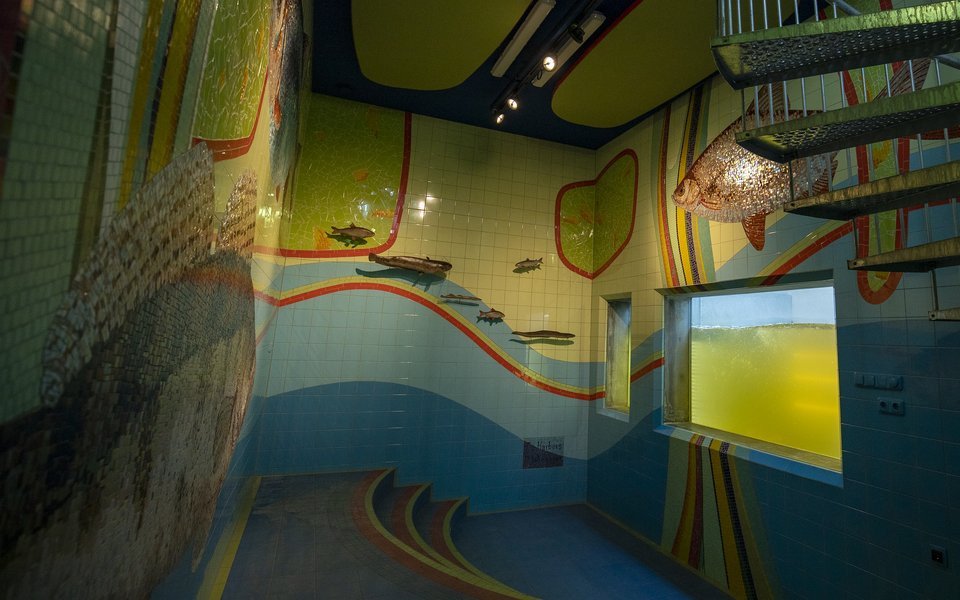
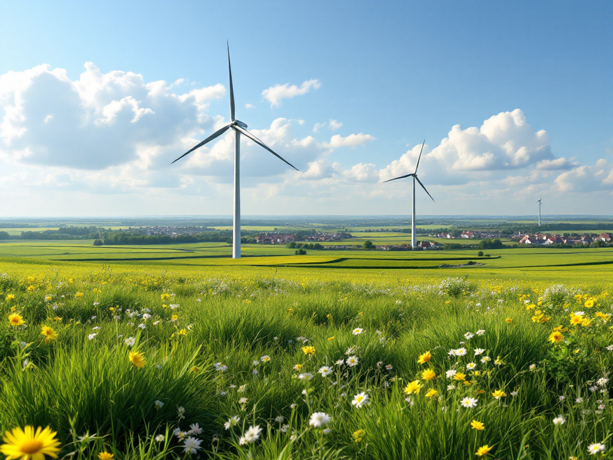
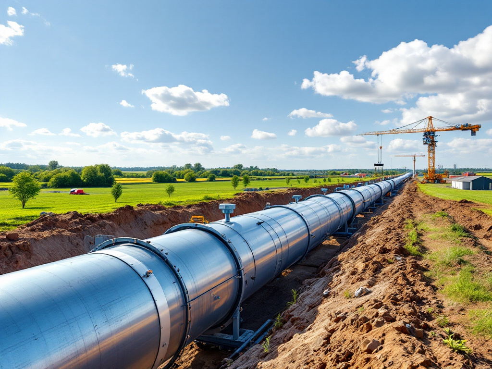

Vispassage Doesburg
Één van Nederlands grootste vispassages: vergrote belevingswaarde, recreatie, aanleg zwaluwwand en herinrichting omgeving.
Lees meerKansen benutten en denken in oplossingen: voor elke uitdaging is een kans om iets moois te realiseren. Met een out-of-the-box kijk en een pragmatische aanpak, van initiatief tot realisatie.
Maak kennisVan initiëring tot oplevering: DIESPE verbindt denkkracht en uitvoering in de gebouwde en levende omgeving.
Leidinggeven aan teams van professionals: integrale projectteams en IPM-teams, van initiatief tot realisatie.
Zoals: Vispassage Doesburg — één van Nederlands grootste vispassages, van verkenning tot realisatie.
Lees verderVertalen van beleidsdoelen en opgaven naar integrale oplossingen: realiseerbaar, betaalbaar en acceptabel, met oog voor detail en duurzaamheid.
Zoals: Waardevolle Kleine Wateren, Bovenlopen Loolee — KRW-doelen vertaald naar inrichtingsmaatregelen voor vier beken.
Lees verderSamenwerking, vertrouwen en het versterken van elkaars krachten — binnen en buiten het project.
Zoals: Optimalisatie watersysteem Lichtenvoorde — wateroverlast aangepakt met een uitgebreid burgerparticipatietraject.
Lees verderEen selectie van de opgaven waaraan wij werken.

Één van Nederlands grootste vispassages: vergrote belevingswaarde, recreatie, aanleg zwaluwwand en herinrichting omgeving.
Lees meer
Ontwikkelen van windpark Duiven bestaande uit 2 windturbines met tiphoogte van 200 meter (FIDIC Yellow Book).
Lees meer
Realisatie van 25 kilometer riool- en industrieel afvalwatertransportleidingen, twee nieuwe gemalen en ombouw van drie gemalen.
Lees meerDIESPE is Diederik Speksnijder: betrokken, proactief en met een pragmatische "eerst denken, dan doen"-aanpak. Al meer dan 25 jaar het gezicht achter duurzame omgevingsprojecten in de grond-, weg- en waterbouwsector.
Diederik Speksnijder is oprichter van DIESPE en al meer dan 25 jaar een bevlogen, betrokken en integer manager in de grond-, weg- en waterbouw. Hij stuurt het team van DIESPE aan en is zelf, als een van de gepassioneerde medewerkers, dagelijks betrokken bij de projecten.
Diederik verbindt het proces aan de inhoud, doorziet de materie snel en komt tot oplossingen — met persoonlijke aandacht voor opdrachtgevers en teamleden. Denk aan watersysteem- en energieprojecten, waterveiligheid en gebiedsontwikkeling.
DIESPE werkt samen met een grote groep specialisten om zo kenniselementen op te vullen en de opdrachtgever een hoge dienstverlening te bieden.
Neem contact opDIESPE staat voor pragmatisch projectmanagement met de mens en de omgeving centraal. Denkt in kansen en oplossingen — ook out-of-the-box — en werkt resultaatgericht aan duurzame projecten.
Persoonlijk contact staat bij DIESPE voorop. Na een uitgebreide kennismaking om uw vraag echt te doorgronden, volgt een gedegen analyse en aanpak die met u wordt besproken — maatwerk, opnieuw en opnieuw.
Van initiatief via verkenning en planuitwerking tot realisatie.
Naar de werkveldenWe voeren onze diensten en werkzaamheden uit volgens De Nieuwe Regeling 2011 (DNR 2011), herziening juli 2013.
Lid van: ZZP Nederland · KNW — Koninklijk Waternetwerk